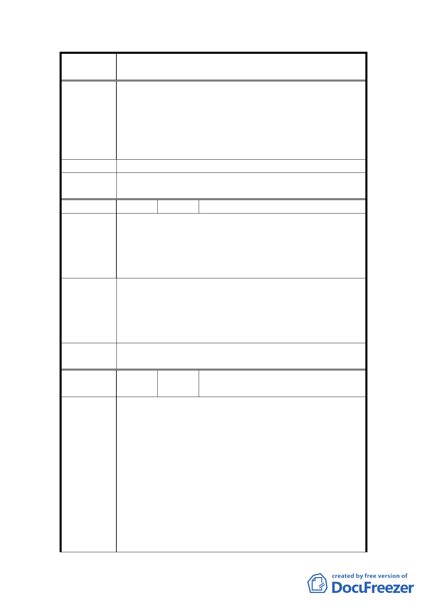

案
名
變更臺北市士林區三玉段一小段 22-3 地號等體育場用
地（天母運動公園）為臺北市立體育學用地主要計畫案
3.現整個台灣難得有一個充滿異國情調的天母國際化社
區，現運動公園是開放給各國人士日常休閒活動最主
要的公園綠地，政府常說要做國際村的一份子，提升
國家形象，讓臺北市有國際化吸引人的特色，讓後代
子孫認同現在所做的努力，故請各位長官及都市計畫
先進予以重視制止變更。
建 議 辦 法 反對變更。
委員會決
議
同編號 1。
編 號 16 陳情人 藍議員世聰
臺北市政府教育局在本案土地用途尚未變更時，即已先
行完成臺北市立體育學院第一期校舍工程，其適法性引
陳 情 理 由 起天母地區市民諸多疑慮，且一旦體育學院進駐，天母
地區市民使用天母運動公園之便利性恐受縮限，故反對
此案通過，並惠請 貴會慎重考慮。
中央政府日前已朝將國內重要體育院校合併為體育大學
之方向思考，臺北市立體育學院亦可朝向此方向規劃，
建 議 辦 法 一併納入未來可能在林口設立之體育大學。至於現存之
天母運動公園，建議採目前之使用，勿再作任何變更，
以維天母地區市民之權益。
委員會決
議
同編號 1。
編
號 17
陳情人
都市發展局檢送 94 年 11 月 27 日地
方說明會紀錄
1.政府不應違反當時徵用土地的承諾，故天母運動公園
應維持現狀以供市民作為休憩運動空間。
2.建議體育學院可考量遷移至他處，例如：關渡平原。
3.當初徵收計畫內有關教育方面之使用僅有「體專教室」
一項，故若政府今日變更都市計畫，不僅出爾反爾，
陳情理由
更違反民眾信賴利益保護原則。
4.未來本地區若由體院來管理，則在預算使用方面一定
會因為土地使用不同而有不同，故希望維持體育場使
用。
5.目前體育場之建蔽率約 15﹪，若改為學校，建蔽率為
40﹪，則天母人的運動空間將大幅縮減。
6.堅決反對體院進駐，因未設置體院不僅使公園綠地面
16